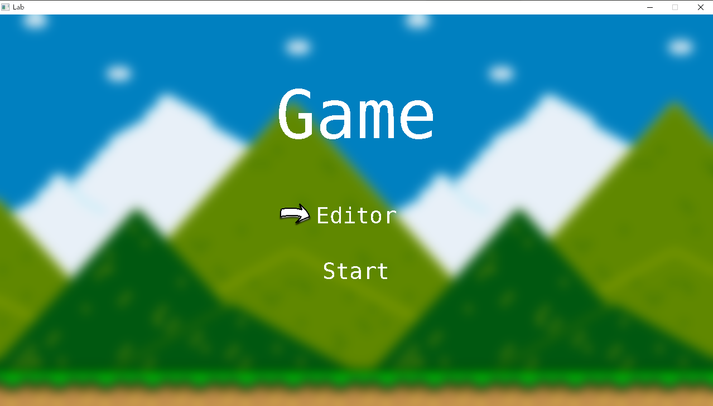
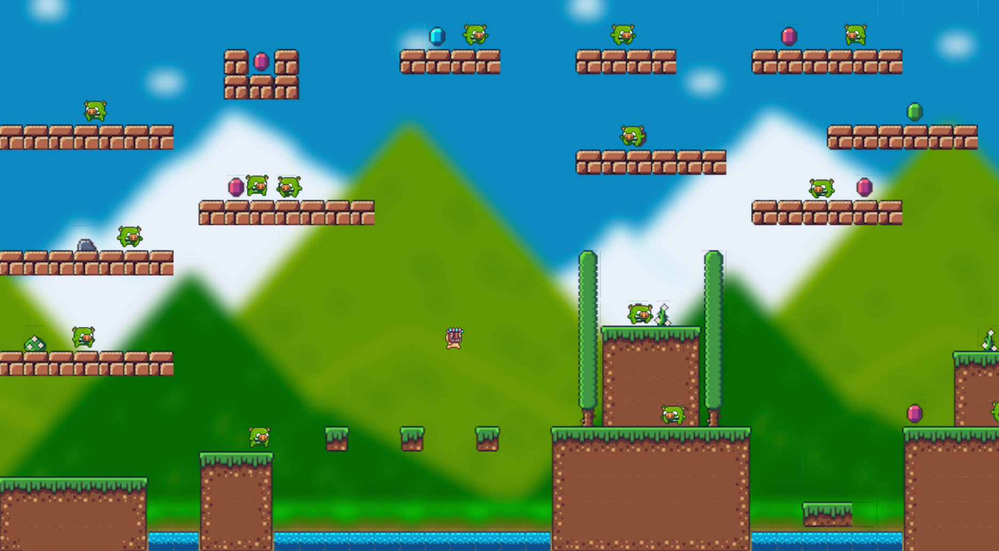
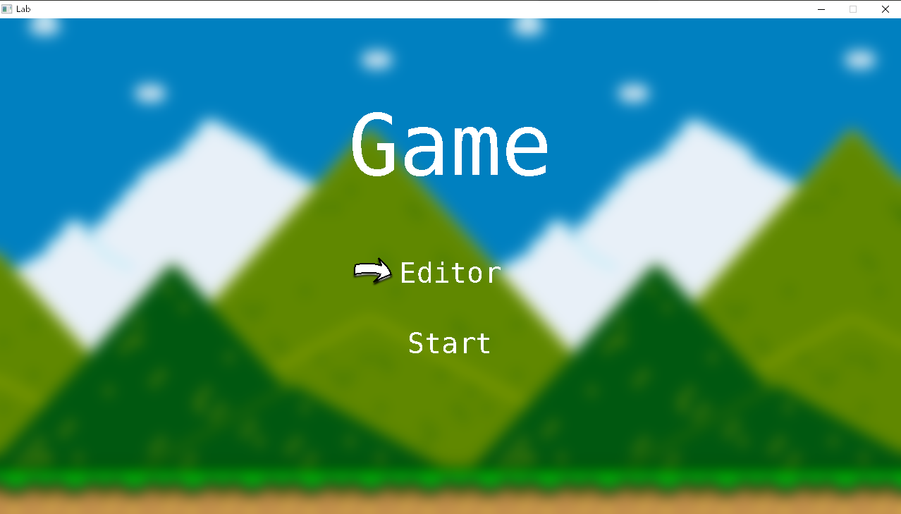
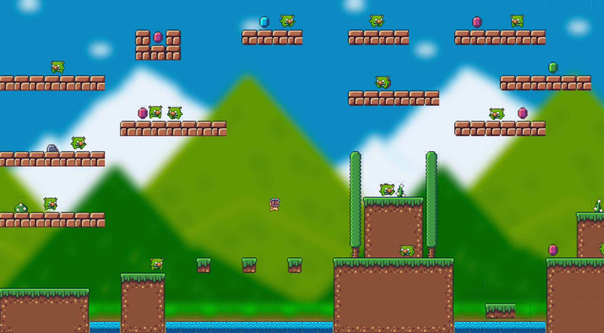
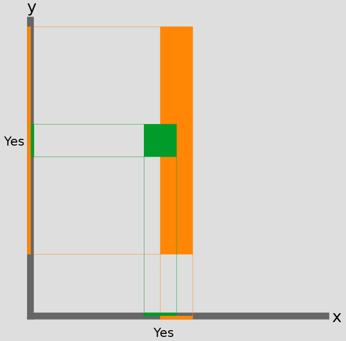

Game Demonstration
Game play
Basic gameplay.
Level editor.
Screen shots
Title screen
{kind=link}
Gameplay
{kind=link}
Editor

This project is a simple 2D platformer game that was built with SDL2. Besides, we developed a game engine which consists of a sprite editor and a tilemap editor.
We also implemented a component pattern game engine which allows you to add sprites, texts, animation, gameobjects and tilemaps.
Basic gameplay.
Level editor.
Title screen
Gameplay
Editor
We implemented a basic enemy AI.

The enemy changes between walk and rest states based on fixed time schedule. The player detection runs with highest priority, and will change the enemy state to attack when the player is visible and is close.
We implemented a simple Raycast() function for detecting player.
The collision check method is adapted from the Separating Axis Theorem (SAT) in Austin Morlan 's tutorial.
The sprites we found still have some visible flaws (the little black edges in some tiles). We could improve this very fastly.(1 day)
Add more sprites, the enemies and characters should have more varietyies. (1 day)
A level file manager that could browse and select between multiple level files. (2 days)
Better data separation. The editor should save different tiles (collidable, uncollidable and anemy objects) into separate files, for easier coding (i.e when generating colliders). (1 day)
Add different backgrounds (1 day)
A real combat system that allows player to wield a weapon.(1 week)
Battle reward mechanics. The sprite sheet we use already provides many potion-like items, and we could use these as dropped rewards from the enemies. 3 days
Add more levels, even chapters, make a new game process manager and UI for all level displays (1 to 2 week)
Add narratives (1 week)
Make a better title screen and pause menu with clickable buttons (1 week)
wang.jiangch@northeastern.edu
Yang Huhu.ya@northeastern.edu
Zhou Hangzhou.han@northeastern.edu
Shang Lyulyu.sha@northeastern.edu
{kind=link}